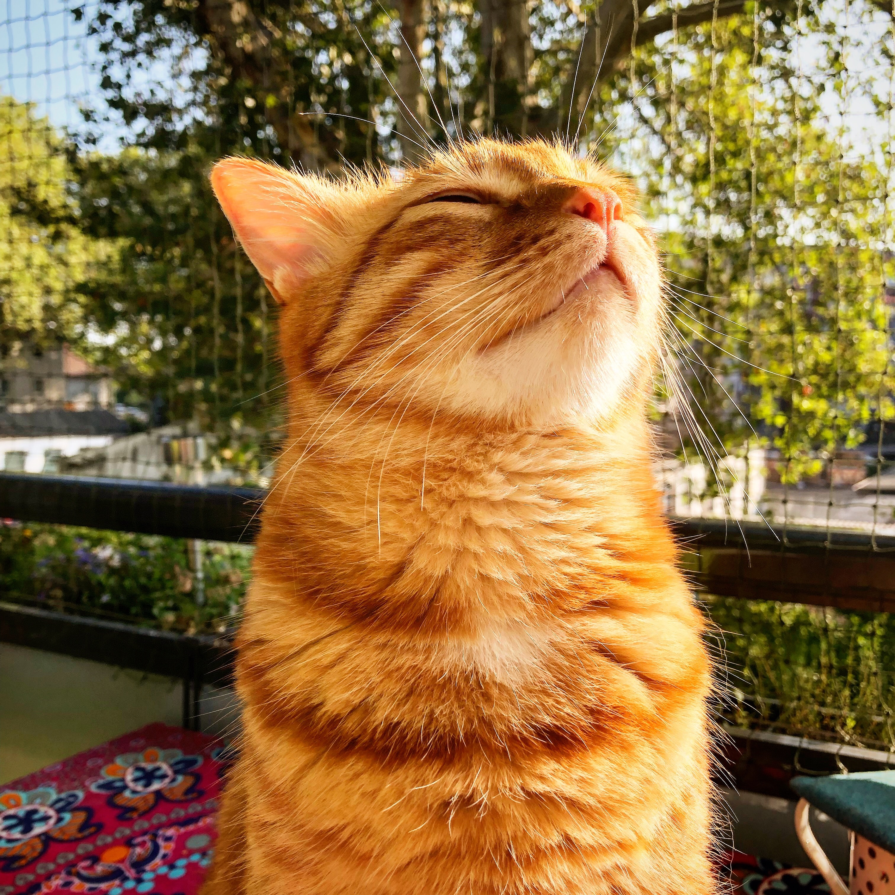
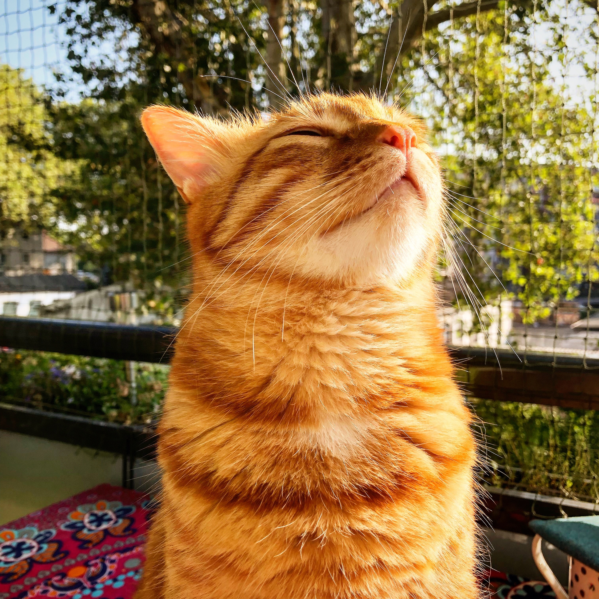

Ley 14.346
La Ley 14.346 es la que nos permite salvar vidas cotidianamente. Bajo esta Ley, podemos rescatar
animales
que se encuentren en la vía pública o en un ámbito privado.
ART 1º - Será reprimido con prisión de quince días a un año, el que infligiere malos
tratos
o
hiciere víctima de actos de crueldad a los animales.

Seguinos en instagram
@refugioanimales


 
